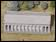

Day 5: Olive leaf crownsA winning athlete is presented with winner's ribbons The winners now come to the moment they have dreamed of: one by one each athlete steps forward and is crowned with a wreath of olive leaves. This is placed on their heads by one of the Hellanodikai. Having received this great honour, the victors know that they have made a great offering to Zeus of their strength and speed. As the athletes are congratulated, the crowds celebrate too, showering their heroes with bright petals and leaves which they toss into the air. |
|
| back to day 5... | |